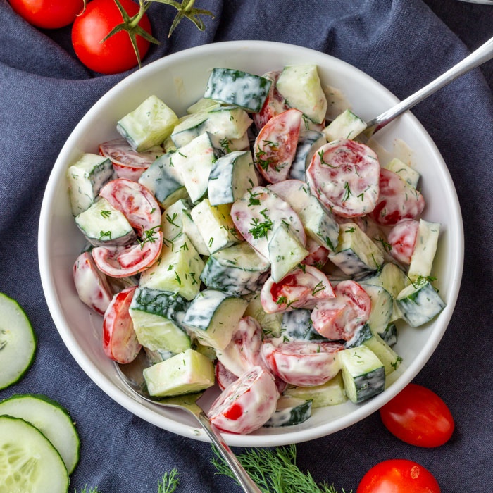

Creamy Tomato Salad is a fresh, flavorful, and irresistibly creamy dish made with juicy, ripe tomatoes tossed in a smooth and savory dressing. Every bite combines the natural sweetness and refreshing crunch of tomatoes with a rich, creamy texture and a hint of tangy goodness. It’s light yet satisfying, making it the perfect side dish for any meal, snack, or summer gathering. Simple, colorful, and packed with flavor, this creamy tomato salad is sure to be a crowd favorite from the very first bite! 🍅🥗✨
Mix the creamy dressing separately, then toss it gently with the tomatoes and other vegetables. Chill for 15 to 30 minutes before serving for the best flavor. 🍅🥗